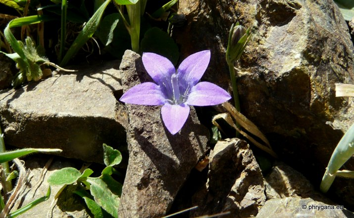
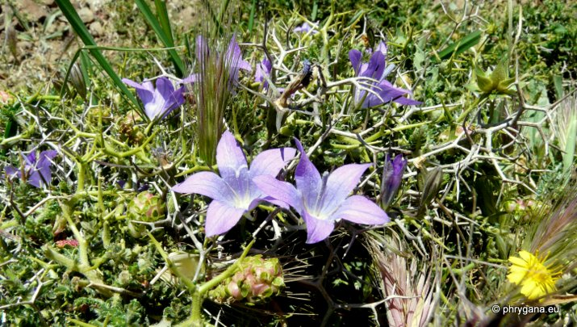
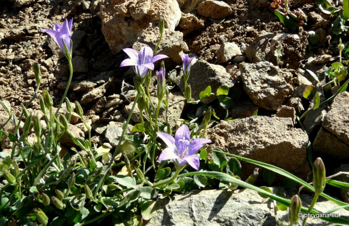
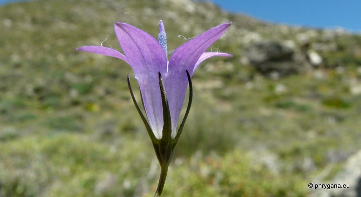
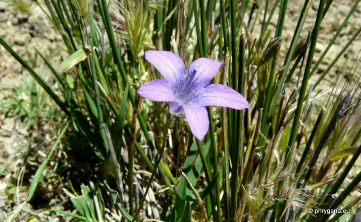

| PHRYGANA | Fauna | Flora | Galles | liste des espèces |
contact -
info - commentaires phrygana1 (at) gmail.com |
| Particularités crétoises | nouveautés | Mines | ressources naturelles |
| Campanula spatulata subsp. filicaulis (HALÁCSY) PHITOS |
| 353 | Flora | CAMPANULACEAE | Campanula L. |
|
 Campanula spatulata subsp. filicaulis Korfalia (Capetaniana) 06 mai 2012 |
| Plante grêle à tiges filiformes, souples, souvent ramfiées | |
| Feuilles: feuilles caulinairesovales à elliptiques, courtement pétiolées; feuilles supérieures lancéolées, sessiles | |
| Fleurs: de 1 à 5; couleur bleu violacé; corolle en entonnoir, à lobes dressés; tube jusqu'à 10 mm; dents du calice linéaires, subulées, faibelement carénées | |
| Fruit: une capsule | |
| Hauteur: 15 - 50 cm | Type biologique: géophyte rhizomateux |
| Floraison: mars avril mai | |
| Altitudes: 110 - 1700 m | |
| Statut en Crète: sous-espèce indigène endémique | |
| Biotopes en Crète: terrains secs rocailleux, phrygana, falaises, gorges | |
| Espèce héliophile. Pousse souvent à l'abri de plantes épineuses telles que Sarcopoterium spinosum (L.) Spach | |
| Note: Campanula spatulata SM. subsp. spatulata est trouvée en Grèce et les îles (y compris la Crète), Albanie, pays Balkaniques | |
|
 Campanula spatulata subsp. filicaulis Korfalia (Capetaniana) 06 mai 2012 |
|
 Campanula spatulata subsp. filicaulis Korfalia (Capetaniana) 06 mai 2012 |
|
 Campanula spatulata subsp. filicaulis Korfalia (Capetaniana) 06 mai 2012 |
|
 Campanula spatulata subsp. filicaulis Korfalia (Capetaniana) 06 mai 2012 |
| 22 mai 2012 |
| © paul fontaine 2007 -- 2012 |